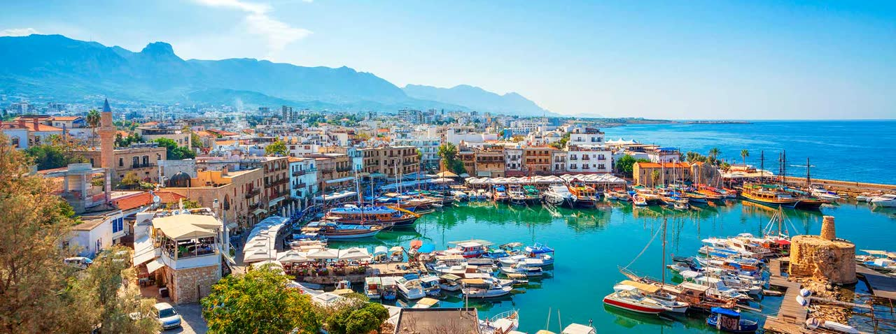
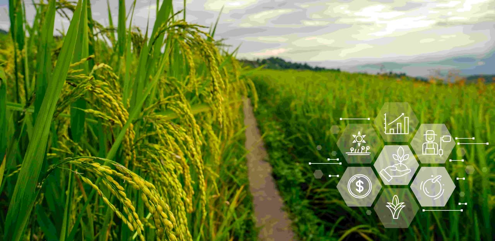

ePavillon
ePavillon En direct
En direct
En ce moment au pavillon
10:15à 11:15, heure d'Antalya
Du financement climatique à l'action régionale : les solutions du P2RS
CILSS Burkina Faso
 En direct
En direct
CILSS Burkina Faso
novembre
10:00 à 17:00, Hôtel DoubleTree by Hilton, Antalya
novembre, 2 activités

UICN Union internationale pour la conservation de la nature
AIMF Association internationale des maires francophones, France
novembre, 11 activités
Aujourd'hui
 OIF avec l'OCDE, le Fonds pour l'adaptation, le GCF et les CIF
OIF avec l'OCDE, le Fonds pour l'adaptation, le GCF et les CIF
CILSS Comité permanent inter-États de lutte contre la sécheresse, Burkina Faso

AIRF et AIMF séance commune
Deux activités dans ce créneauBusiness Maurice Maurice
Le même jour, hors de la journée spéciale
AIMF Association internationale des maires francophones, France
novembre, 9 activités

Green OpenLab avec JVE Centrafrique, Youth Voices Cameroun et trois autres
OIF Organisation internationale de la Francophonie
Les quinze derniers jours, le plus récent en haut. Heures d'Antalya (UTC+3). Les changements survenus depuis votre dernière visite sont signalés.
Vendredi 13 novembre
ven. 13, 13:00 à 14:00ven. 13, 14:15 à 15:15
Prévue le mercredi 18, 15:00 à 16:00. Retirée du programme.
Jeudi 12 novembre
Enjeux de financements pour les régions et les municipalitésFinancer l'action climatique locale : régions et villes francophones
Était le vendredi 13, 18:30 à 19:30. Nouveau créneau à venir.
Samedi 14, 09:20 à 10:10, journée action jeunesse.
Mardi 10 novembre
mer. 11, 15:00 à 16:00jeu. 19, 10:00 à 11:00
Seuls les changements d'horaire, de titre, les annulations, les reports et les nouvelles activités sont listés.